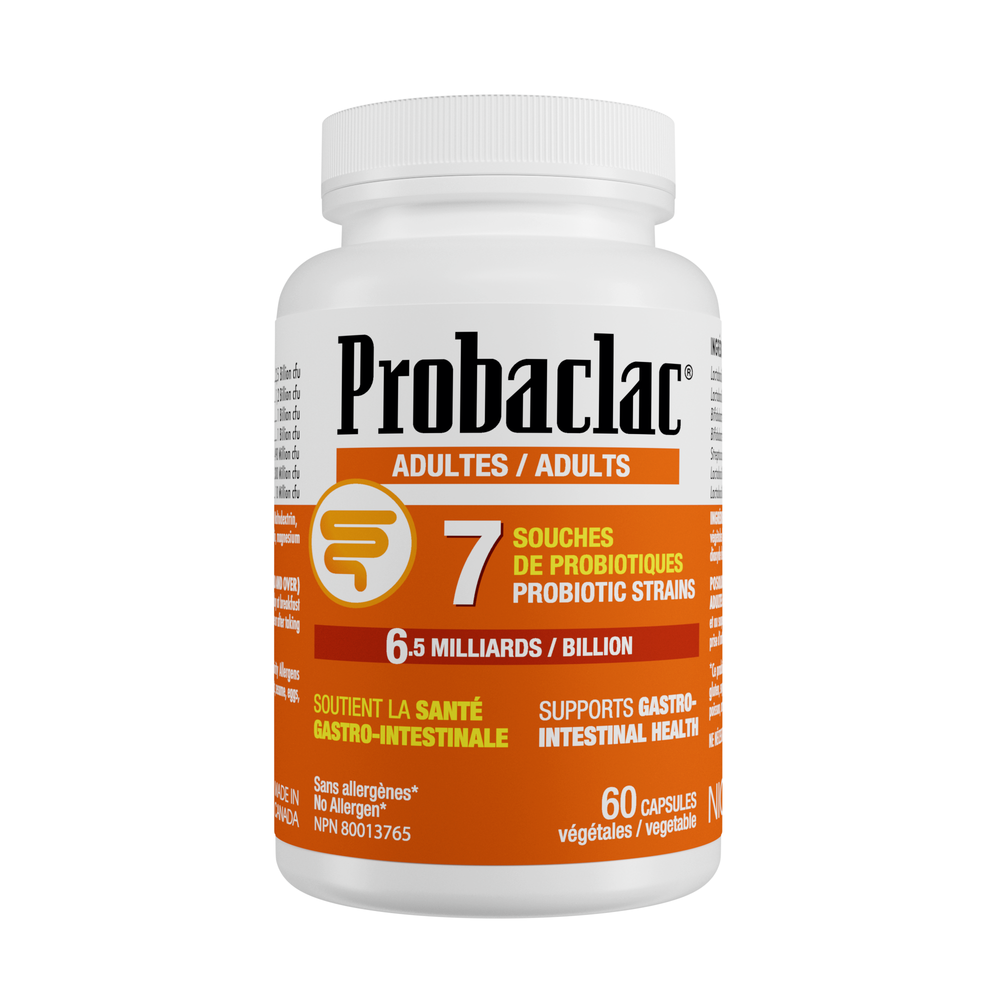

01 / 03

NPN 80066788 · 60 capsQuotidien
Adultes7 souches · 6,5 milliards UFC
- Lactobacillus rhamnosus, L. acidophilus, Bifidobacterium longum…
- Capsule végétale gastro-résistante
- Sans allergènes prioritaires